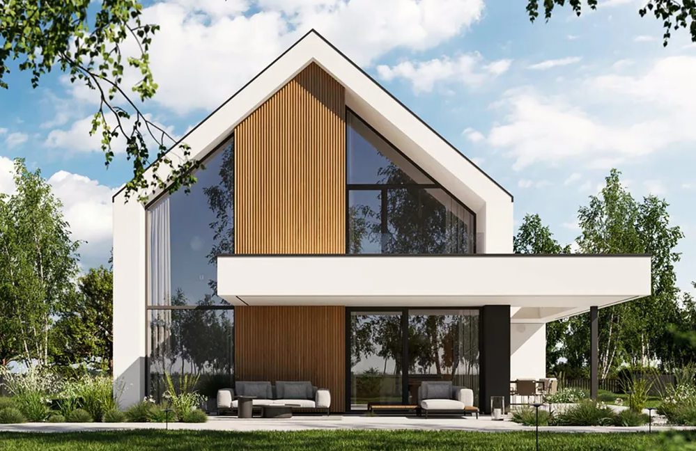
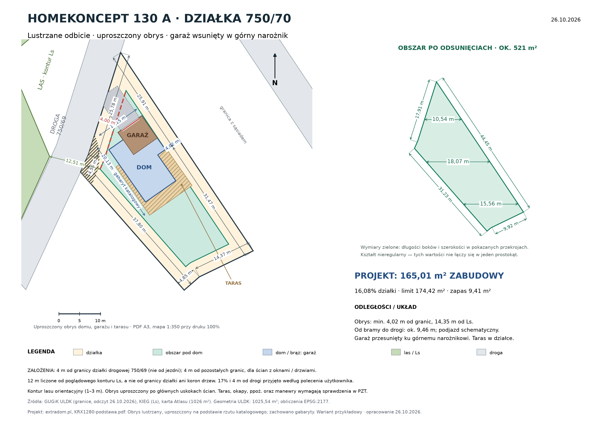
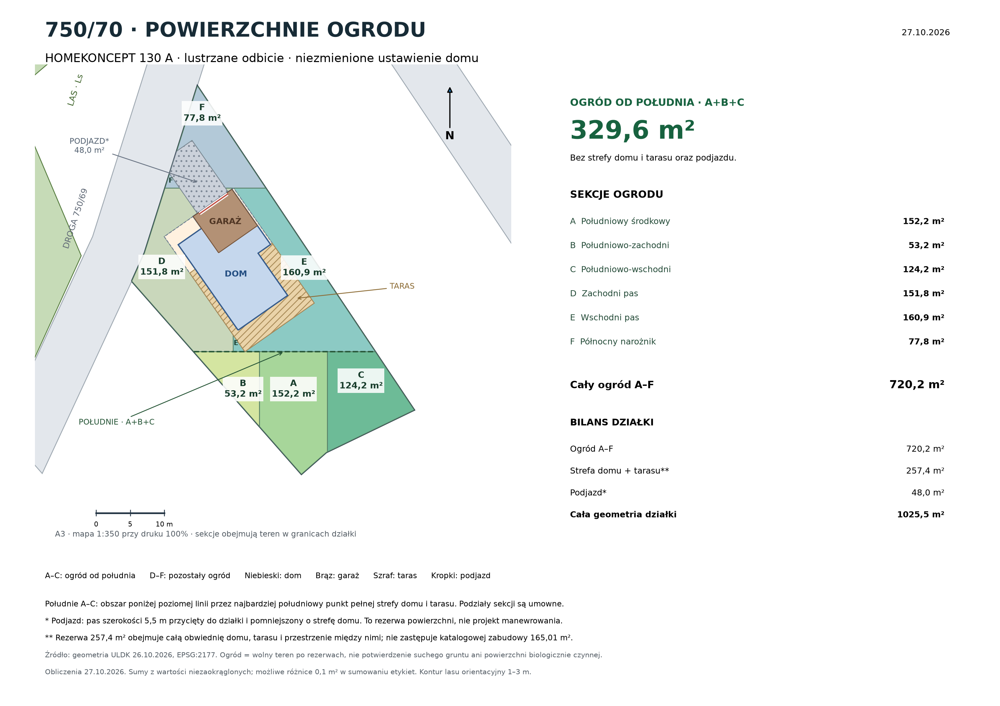

Wartość katalogowa z garażem. Około 16,08% działki 1026 m².
CHWASZCZYNO · DZIAŁKA 750/70Garaż w narożniku.
Garaż w narożniku.
Dom wzdłuż granicy.
Przykładowe zagospodarowanie z projektem HOMEKONCEPT 130 A w lustrzanym odbiciu. Garaż przesunięty ku górnemu narożnikowi rzutu, przy prawej granicy. Brama zwrócona w stronę drogi 750/69, a taras po przeciwnej stronie domu.
220508_5.0004.750/70Wariant koncepcyjnyLustrzany dom.
Lustrzany dom.
Uproszczony rzut.
Zachowano gabaryty projektu; pokazano tylko bryłę, garaż, taras i schemat podjazdu. Przyjęto 17% zabudowy, 4 m od drogi i pozostałych granic oraz 12 m od poglądowego konturu lasu. To założenia wariantu, wymagające weryfikacji w WZ i projekcie.
Zobacz rzut z góry ↓
Za południowym skrajem strefy domu i tarasu, poza podjazdem.
Wolny teren po rezerwach na dom, taras i podjazd; nie bilans PBC.
01
Garaż wsunięty ku górnemu narożnikowi
Lustrzane odbicie pozwala przenieść garaż na prawą stronę frontu i przesunąć go ku zwężającej się części działki. Bryła biegnie w przybliżeniu wzdłuż prawej granicy. „Góra” i „prawa strona” odnoszą się do rysunku; kierunki geograficzne pokazuje strzałka północy.
4,02 mminimum od granic do uproszczonej bryły
14,35 mminimum od poglądowego konturu Ls
9,46 mod środka bramy do drogi w osi wjazdu

Powiększ rzut ↗Odległość od lasu jest orientacyjna. Kontur Ls odtworzono z rastra KIEG z dokładnością około 1–3 m. Zapas względem przyjętych 12 m nie potwierdza odległości geodezyjnej ani spełnienia warunków przeciwpożarowych. Pozycja 4,02 m od granicy wymaga dokładnej mapy i adaptacji.
02
329,6 m² ogrodu od południa
Południowy ogród to sekcje A, B i C — łącznie 329,6 m². Leżą geograficznie na południe od poziomej linii przez najbardziej południowy punkt pełnej strefy domu i tarasu. D, E i F obejmują pozostały wolny teren. Ustawienie domu i garażu zachowano.

Powiększ podział ogrodu ↗| Sekcja | Położenie | Powierzchnia |
|---|---|---|
| A | Południowy środkowy | 152,2 m² |
| B | Południowo-zachodni | 53,2 m² |
| C | Południowo-wschodni | 124,2 m² |
| D | Zachodni pas | 151,8 m² |
| E | Wschodni pas | 160,9 m² |
| F | Północny narożnik | 77,8 m² |
| Ogród od południa · A+B+C | 329,6 m² | |
| Cały ogród · A–F | 720,2 m² | |
| Przeznaczenie w przykładzie | Powierzchnia |
|---|---|
| Ogród A–F | 720,2 m² |
| Pełna strefa domu i tarasu | 257,4 m² |
| Rezerwa na podjazd poza strefą domu | 48,0 m² |
| Razem · geometria działki | 1025,5 m² |
Sumy obliczono z wartości niezaokrąglonych. Różnice 0,1 m² przy sumowaniu etykiet wynikają z zaokrągleń.
Rezerwa
Co odjęto od ogrodu?
257,4 m² to pełna prostokątna obwiednia domu, tarasu, detali i przestrzeni między nimi. To rezerwa zagospodarowania, nie katalogowa powierzchnia zabudowy 165,01 m². Podjazd 48,0 m² policzono jako pas szerokości 5,5 m przycięty do parceli, bez nakładania na strefę domu.
Wolny teren
Ogród a powierzchnia biologicznie czynna
720,2 m² oznacza teren pozostały po przyjętych rezerwach, także w pasach bocznych. Dodatkowe chodniki, instalacje, miejsca postojowe i zagospodarowanie mogą go zmniejszyć. Nie potwierdzono suchego gruntu, nasłonecznienia ani bilansu PBC.
03
Projekt, bryła i taras
| Parametr | Wartość |
|---|---|
| Wersja projektu | Lustrzane odbicie · KRX1280 |
| Gabaryty katalogowe | 11,15 × 20,13 m |
| Powierzchnia zabudowy z garażem | 165,01 m² |
| Przyjęty limit zabudowy | 17% × 1026 = 174,42 m² |
| Zapas względem przyjętego limitu | 9,41 m² |
| Uproszczona obwiednia bryły na schemacie | około 169,13 m² |
| Taras i pełna obwiednia rysunku | Mieszczą się w granicach działki |
Uproszczenie
Obrys schematu a powierzchnia zabudowy
169,13 m² to pole uproszczonej obwiedni, która wypełnia drobne wcięcia ścian. Nie zastępuje katalogowej powierzchni zabudowy 165,01 m². Model nie został zmniejszony; szczegóły ścian, okapów i zadaszeń należy odczytać z dokumentacji projektu.
Schemat
Wjazd i miejsce na ogród
Podjazd to pas o przyjętej szerokości 5,5 m, poprowadzony od bramy ku drodze. Nie sprawdzono torów jazdy i promieni skrętu. Taras mieści się w działce, a wolny teren podzielono na sześć sekcji w części „Ogród A–F”. Powierzchnie wynikają z geometrii i przyjętych rezerw; nie są bilansem PBC ani potwierdzeniem suchego ogrodu.
04
Założenia i źródła
Wariant
17% i przyjęte odsunięcia
Na potrzeby tego przykładu użytkownik wskazał 17% zabudowy, 4 m od drogi i 12 m od lasu. Dodatkowo przyjęto 4 m od pozostałych granic dla ścian z oknami lub drzwiami. Od drogi mierzymy od granicy parceli 750/69, nie od jezdni; od lasu — od konturu Ls, nie od drzew. Główna analiza zawiera wcześniejszy wariant oparty na deklarowanych 20%; nie jest to potwierdzenie limitu 17% w WZ.
Do weryfikacji
Pełna WZ i projekt zagospodarowania
Nie udostępniono pełnej decyzji WZ z załącznikiem. Architekt musi sprawdzić linie zabudowy, dach garażu, zadaszenia i okapy, odległości przeciwpożarowe, sieci, służebności, dostęp i manewrowanie oraz grunt, wodę i odwodnienie. Ten rzut potwierdza dopasowanie geometryczne do przyjętego wariantu, nie prawo do realizacji.
Autor projektu i wizualizacji: HOMEKONCEPT. Powierzchnia zabudowy 165,01 m² i gabaryty 11,15 × 20,13 m. Projekt wybrany przez użytkownika 26.10.2026.
Źródło wizualizacji katalogowej pokazanej na tej stronie; odczyt 27.10.2026. Obrys bazowy odtworzono z rzutu wersji podstawowej i odbito lustrzanie, zachowując skalę. Wizualizacja przedstawia ten sam lustrzany wariant, ale przykładowe otoczenie.
Odczyt 26.10.2026; obliczenia w EPSG:2177. Pole geometrii 1025,54 m²; powierzchnia ofertowa 1026 m² stanowi podstawę limitu 174,42 m².
Kontur Ls: poglądowa digitalizacja KIEG z 26.10.2026, orientacyjnie 1–3 m. Założenia i obliczenia układu: 26.10.2026; podział i powierzchnie ogrodu: 27.10.2026. Publikacja podstrony: 27.10.2026. Pozostałe ustalenia głównej analizy zachowują własne daty.